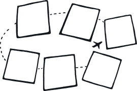
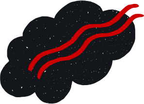
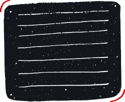

создай карту желанийвместе с ребенком





О чем вы мечтаете? Достигать целей гораздо проще, когда вы точно знаете, чего хотите. Карта желаний – инструмент, который пришел в нашу жизнь из учения фен-шуй. Ее создание помогает четко увидеть образ своей мечты и сконцентрироваться на том, что важно. Работа над картой желаний вместе с ребенком может стать увлекательным творческим процессом, который укрепит ваши отношения и поможет исполнить заветные мечты.

и таким же образом в порядке важности на этом листе размещаются изображения других желаний, чтобы создать визуальный образ того, к чему нужно стремиться.
Когда мы проводим исследование, анализируем информацию и придумываем идеи, нашему мозгу важно видеть общую картину, чтобы замечать неожиданные связи и лучше понимать полученную информацию. Поэтому мы используем различные карты, стикеры, рисуем скетчи и собираем мудборды. Карта желаний – замечательная идея для развития такого подхода. Не говоря уже о том, что мечтательное состояние важно для творческого процесса. В этом состоянии человеку приходят в голову смелые и свежие идеи. Когда будете делать вместе с ребенком карту желаний, попросите его пофантазировать и стать изобретателем. Может быть, он придумает предмет или игрушку, которой не существует, но как было бы здорово, если бы она была? Или попросите его выйти за рамки физических предметов и помечтать об абстрактных вещах: в каком мире ему хотелось бы жить? Каковы его желания в общении с друзьями и природой? Какие иллюстрации и картинки подойдут к его ответам?
Copyright 2020. Все права защищены.